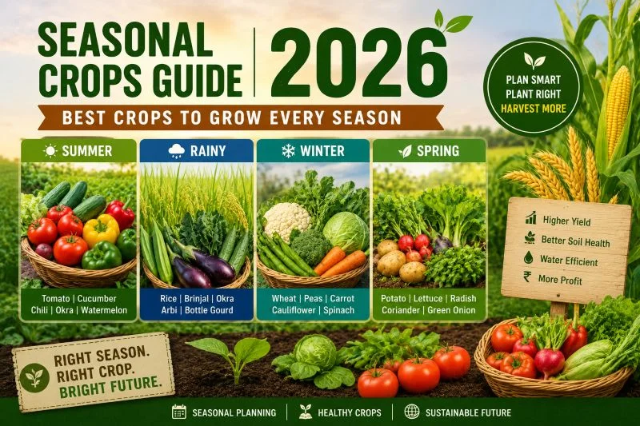

Crops are grown in different seasons depending on the climate, rainfall, and temperature.
In India, there are three main crop-growing seasons: Kharif, Rabi, and Zaid. The Kharif season starts with the monsoon, usually from June to October, and farmers grow crops such as rice, maize, cotton, groundnut, soybean, and millets.
The Rabi season generally starts in October or November and continues until March or April.
During this season, farmers grow wheat, barley, mustard, peas, chickpeas, and other pulses.
The Zaid season occurs during the summer months, mainly from March to June, when farmers grow crops such as watermelon, muskmelon, cucumber, pumpkin, and other vegetables.
Farmers choose crops according to soil type, water availability, and weather conditions to achieve better yields.
